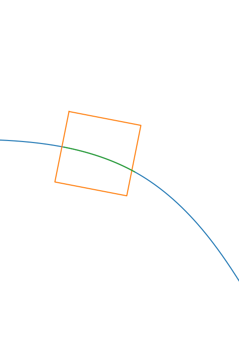

Diagram of the software architecture used for the robot intention feedback project.
Robot Controller
Path Generator
Processing
read CSV data
rotate kernel to world frame
get coordinates in kernel
rotate coordinates to robot
parse coordinates to json
socket server
socket client
window render
initiate x window
parse json from socket
draw array on the window
Things to discuss:
This is done by Prime Vision
Things to discuss:
Things to discuss:
This is done by Prime Vision
Things to discuss: